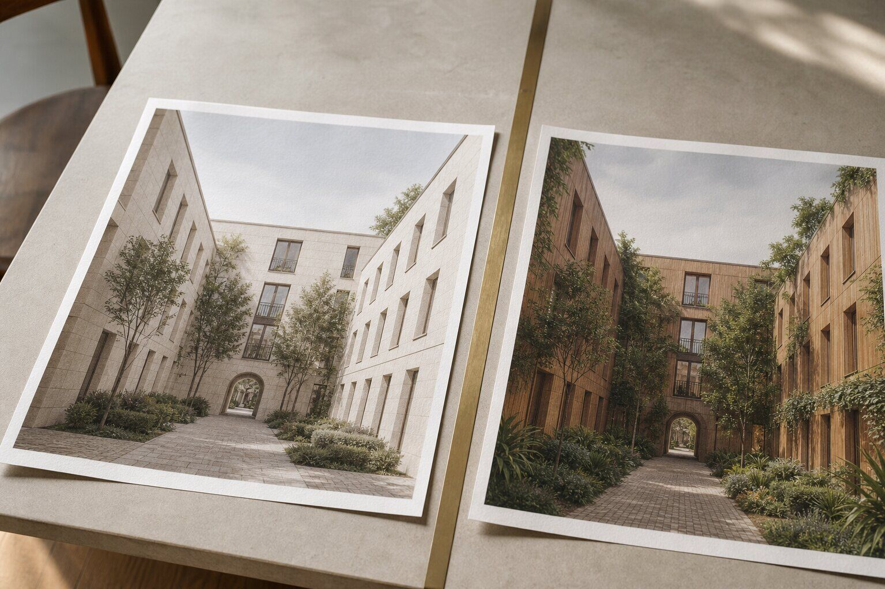

How should architects track Veras images made from V-Ray?
Start Veras from a named VFB History render and attach the model revision, camera and option status to that frame. Save the prompt and accepted output under the same identifier. This creates a traceable chain from generated image to source render without pretending Veras altered the underlying V-Ray scene.
A client points to the warmer option and says, “This one, but with yesterday's canopy.” The image is still open in Veras. The V-Ray model has moved on. Nobody can remember whether the source was the final VFB render, a viewport capture or the frame produced before the glazing changed.
The pixels look organized. The decision is not.
Chaos now lets users open Veras from V-Ray's VFB toolbar, the VFB History panel, the V-Ray toolbar and other interface points. That convenience is useful. The History route is the one that deserves to become office habit because it attaches ideation to a recoverable source frame.
Why is VFB History the better launch point?
Chaos's Veras for V-Ray announcement says the VFB History panel can launch Veras with the selected history render. It also states that Veras takes a viewport screenshot or VFB image and works at image level. It does not modify the 3D scene.
That distinction gives the workflow its value and its paperwork. Veras can propose a mood or material direction quickly because it is not rebuilding the scene. For the same reason, the output cannot tell you which scene state produced its input unless you preserve that relationship.
A named History frame is stronger than a screenshot copied from the current window. It can identify the exact render chosen from several attempts. The frame should then point outward to the host model revision and saved camera. VFB History is not a full project database, but it is a sensible hinge between the controlled renderer and the generated option.
Our earlier guide to non-destructive Veras ideation in V-Ray kept the scene in charge. This is the missing clerical move: keep the source frame in charge of the image lineage.
What belongs in the frame name?
Do not stuff a paragraph into it. Use a short identifier that survives in filenames, review notes and conversation. A useful pattern is project, saved camera, model revision, design option and render sequence.
| Field | Example | What it prevents |
|---|---|---|
| Project | HBR | Frames detached from their job |
| Camera | EXT-03 | Near-identical views with different lenses |
| Model revision | R27 | Approval against superseded geometry |
| Option | CAN-B | Mixing alternate design branches |
| Sequence | VFB-04 | Overwriting the earlier source |
The result, HBR_EXT-03_R27_CAN-B_VFB-04, is not poetry. Good. It is a handle. Put human-readable notes elsewhere: overcast setup, limestone study, glazing approved, planting provisional.
Record the camera's actual identity in the host file too. A label that says EXT-03 while pointing to an improvised orbit is a tidy lie. Our BIM integration test treats repeatable cameras as a basic production check. The same standard belongs here.
What should travel from V-Ray to Veras?
Choose the source according to the question. A viewport screenshot can be enough for a coarse massing mood. A resolved VFB render is the better source when the decision depends on authored lighting, materials or reflections. Chaos markets both routes; they do different work.
Before launch, confirm the crop, aspect ratio and visible option set. If the frame is a render region, label it as a region. If a temporary object is hidden, record that fact. Veras will interpret the pixels it receives, not the coordination story that produced them.
Keep the clean source beside every accepted output. A generated option should never be the only surviving copy of the view. This follows the source hierarchy in our render provenance package, even though the software differs: input, settings, output and decision stay together.
How should a Veras branch be recorded?
Create a branch identifier from the source frame, then record the engine, prompt, reference images, selection or mask, aspect ratio and output number. Chaos says current Veras generation uses Nano Banana 2, but engine names and available controls can change. Record what the interface reports on the day.
If the operator makes six attempts, keep six in the count. The selected image is not attempt one merely because the other five disappeared from the presentation. The rejected files may be disposable after review, but the branch note should retain the number of attempts and why the winner survived.
Do not describe a generated material swap as a V-Ray material change. Veras can show a convincing timber direction while the scene still contains plaster. The option is a visual proposal until someone changes the scene and renders it again.
Can the AI option become the next source?
Yes, with a label. A Veras output may become the input for a more focused image edit, a reference for scene authorship or a client-review candidate. Each step should cite its parent rather than quietly replacing it.
Use a simple parent-child chain: VFB-04 produced VER-04A through VER-04F; VER-04C was selected; the scene team translated its warm soffit and denser planting into model revision R28; VFB-05 is the renderer's proof of that translation. The generated image inspired the change. The new render verifies it.
This is where a visual decision log earns its keep. Our AI image decision-log method asks which image changed a design decision. The History identifier supplies the source reference that makes the answer useful months later.
Which comparison should reach the client?
Show the clean V-Ray source beside the Veras proposal when the AI image changes more than the requested variable. If the task is “warmer stone,” the comparison should make altered windows, planting or geometry visible too. A charming proposal should not smuggle five unrequested decisions into one approval.
Label the generated image as a concept visualization. If a material, fixture or view is provisional, say so at the point of review. A client cannot approve the intended stone while guessing which parts of the picture belong to the model.
When the direction is accepted, return to the scene. Update the authored materials, lighting or assets, render from the saved camera and place that proof beside the approved concept. The handoff closes when the model catches up, not when the generated JPEG receives a green tick.

Our take: convenience needs a paper trail
Veras inside V-Ray removes an export detour. It does not remove the need to know what the AI saw. The VFB History panel offers the rare interface shortcut that can improve speed and accountability at once, provided studios choose a named frame instead of the nearest visible pixels.
Give every idea a parent. Otherwise VFB History is history only in the decorative sense.